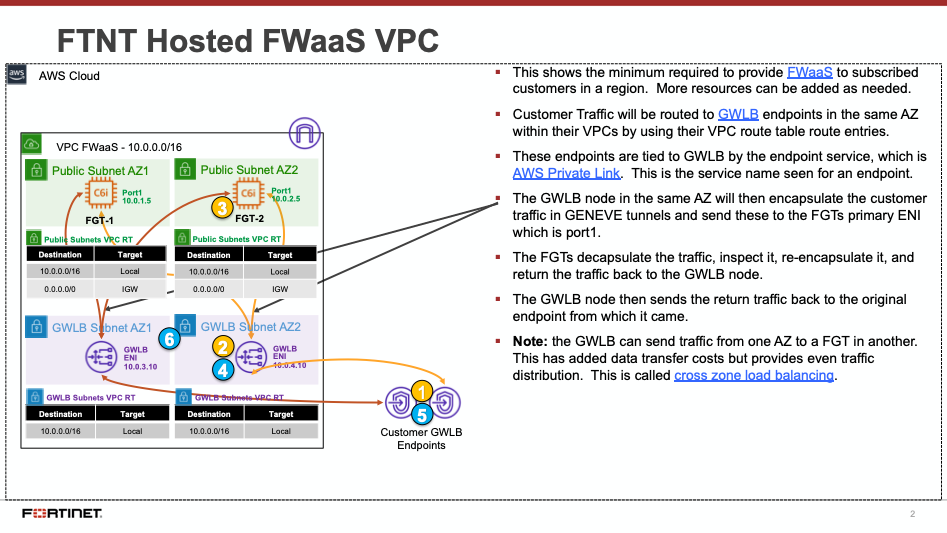
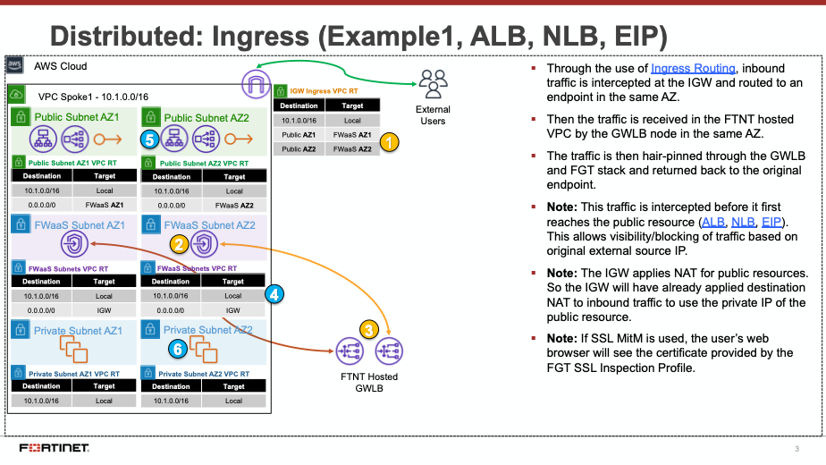
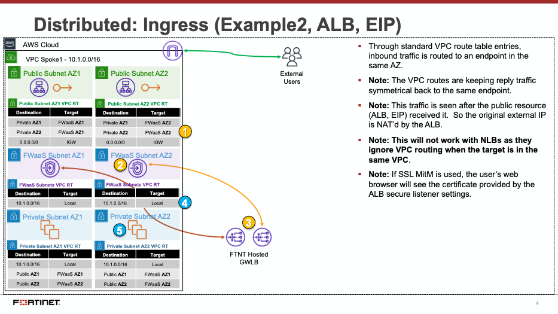
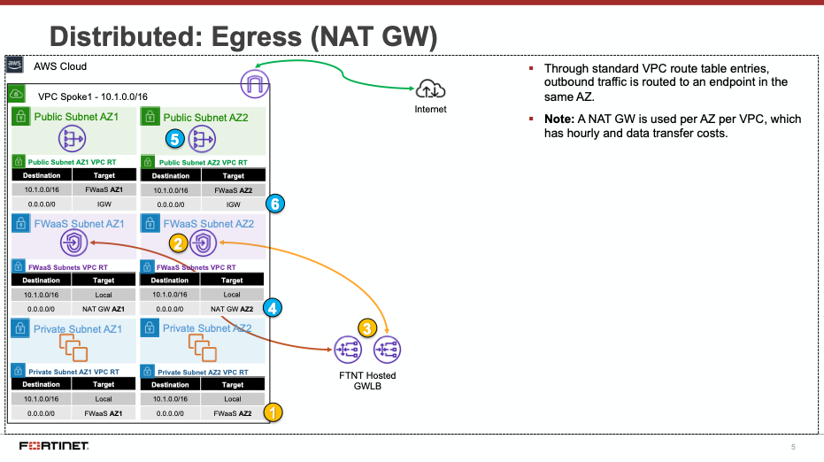
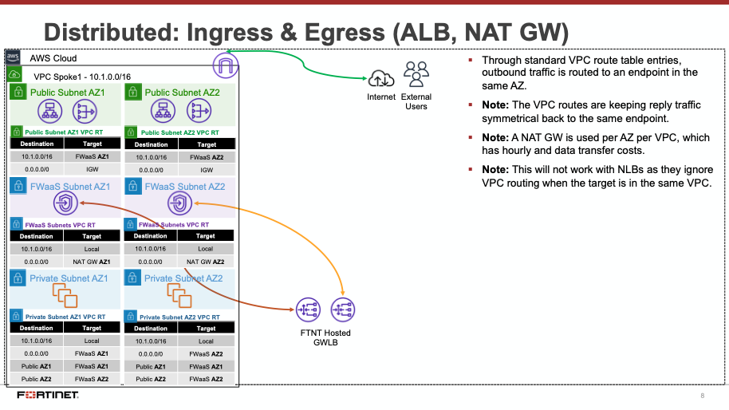
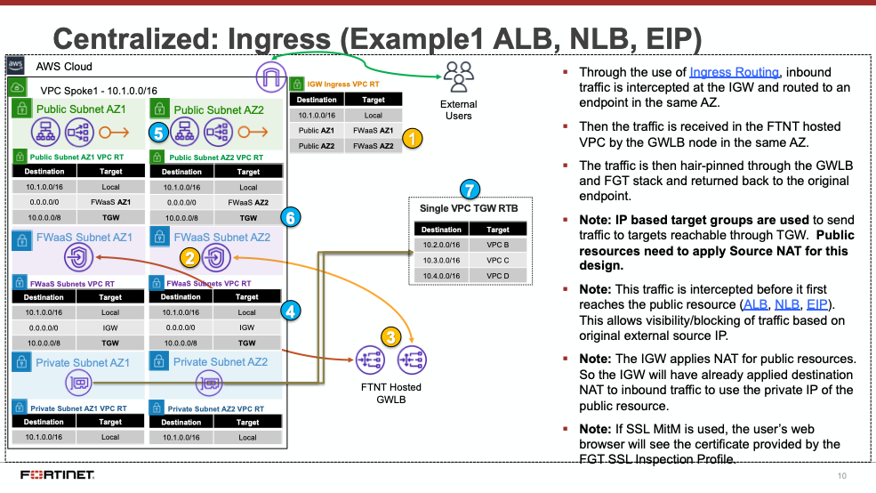
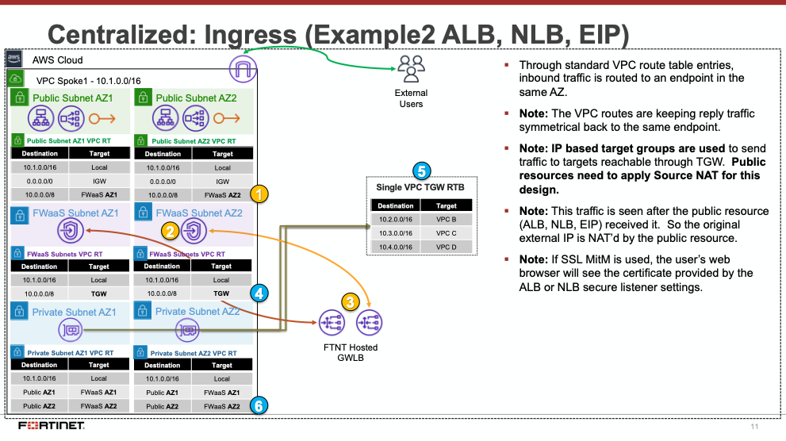

AWS Common Architecture Patterns
While there are many ways to organize your infrastructure there are two main ways to design your networking when using GWLB, centralized and distributed. From the perspective of networking, routing, and GWLBe placement. We will discuss this further below.
FortiGate CNF is a SaaS offering that on the backend uses FortiGates, AWS GWLB, and GWLB endpoints to intercept customer traffic and inspect this transparently. As part of the deployment process for FortiGate CNF instances, the customer environment will need to implement VPC and ingress routing at the IGW to intercept the traffic to be inspected.
The FortiGate CNF security stack which includes the AWS GWLB and other components will deployed in Fortinet managed AWS accounts. The details of the diagram are simply an example of the main components used in FortiGate CNF. This is more to understand what happens when customer traffic is received at our GWLB.

Decentralized designs do not require any routing between the protected VPC and another VPC through TGW. These designs allow simple service insertion with minimal routing changes to the VPC route table. The yellow numbers show the initial packet flow for a session and how it is routed (using ingress and VPC routes) to the GWLBe endpoint which then sends traffic to the FortiGate CNF stack. The blue numbers show the returned traffic after inspection by the FortiGate CNF stack.
Note: Any subnet where the GWLBe for the FortiGate CNF instance is to be deployed will need to have a specific tag name and value to be seen in the FortiGate CNF portal. Currently this is the tag name ‘fortigatecnf_subnet_type’ and tag value ‘endpoint’.




Centralized designs require the use of TGW to provide a simple hub and spoke architecture to inspect traffic. These can simplify east-west and egress traffic inspection needs while removing the need for IGWs and NAT Gateways to be deployed in each protected VPC for egress inspection. You can still mix a decentralized architecture to inspect ingress and even egress traffic while leveraging the centralized design for all east-west inspection.
The yellow numbers show the initial packet flow for a session and how it is routed (using ingress, VPC routes, and TGW routes) to the GWLBe which then sends traffic to the FortiGate CNF stack. The blue numbers (east-west) and purple numbers (egress) show the returned traffic after inspection by the FortiGate CNF stack.



For more examples of distributed and centralized models, please reference the examples on the FortiGate CNF Admin Guide.